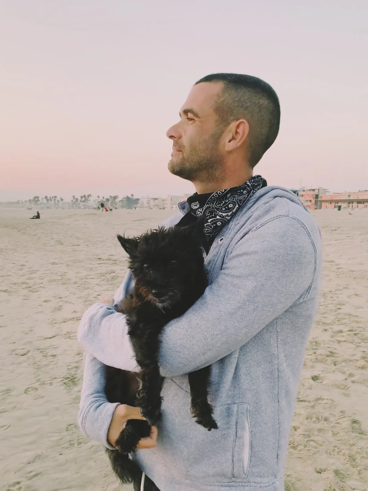

All three values were normal. The direction wasn’t.
Labs
BUN · mg/dL · Range 7–27 · Three draws
Every one of these results came back normal. But the direction didn’t. A single number tells you where your dog is. Three tell you where your dog is going.
BarkLens flags a trend when three or more results move the same direction.

Our Story
For Charlie · 2009–2025
“BarkLens exists in Charlie’s honor. This isn’t just pet tech. It’s care, clarity, and love — built into something useful.”
“Lilly’s specialist had never met her. I handed over eleven years in one page — every med, every draw, the food change in March. She said it was the best prepared she’d seen anyone come in.”